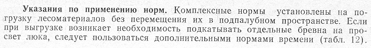
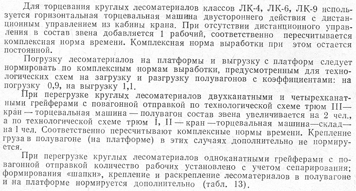
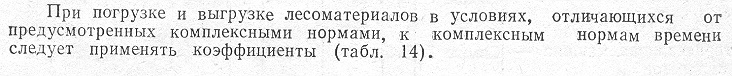

Нормы времени на подкатку бревен на просвет люка, чел.-ч на 1т
Нормы времени на формирование "шапки", крепление и раскрепление лесоматериалов, чел.-ч
Коэффициенты к нормам времени на перегрузку лесоматериалов